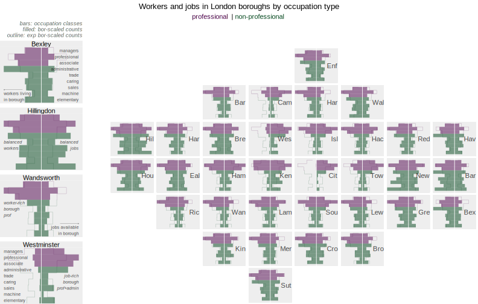
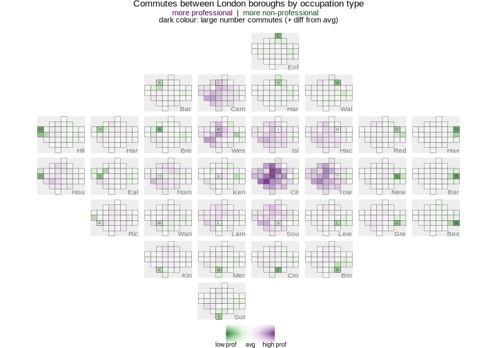

Introduction
This vignette reproduces ideas discussed in Beecham and Slingsby 2019, using ggplot2 to create gridmaps analysing the geography of travel-to-work between London boroughs.
Data
The travel-to-work data contains origin-destination pairs
representing every borough-to-borough commute combination: a
tibble containing 9,801 observations and five
variables:
-
o_borBorough origin. -
d_borBorough destination. -
occ_typeOccupation type of commute:1_managers_senior,2_professional,3_associate_professional,4_administrative,5_trade,6_caring_leisure,7_sales_customer,8_machine_operatives,9_elementary. -
countCount of number of commutes of occupation type between origin-destination borough pair. -
is_profWhether the occupation type is professional or non-professional.
london_ttw <- read_csv("london_ttw.csv")To analyse commuting between London boroughs by occupation type we differentiate between:
- jobs located in a borough, accessed by workers living in London; and
- workers living in a borough, who access jobs in London
# Jobs located in borough.
jobs <- london_ttw |>
group_by(d_bor, occ_type) |>
summarise(count=sum(count), is_prof=first(is_prof), type="jobs") |> ungroup() |>
select(type, bor=d_bor, occ_type, is_prof, count)
# Workers living in borough.
workers <- london_ttw |>
group_by(o_bor, occ_type) |>
summarise(count=sum(count), is_prof=first(is_prof), type="workers") |> ungroup() |>
select(type, bor=o_bor, occ_type, is_prof, count)Generate allocation and make grid
We use points_to_grid(), specified with targeted
spacers, to get a solution close to the LondonSquared
layout. See the vignette Generate gridmaps for a fuller
explanation of points_to_grid() and
make_grid().
n_row <- 7
n_col <- 8
spacers <- list(
c(1, 3), c(1, 5), c(1, 6),
c(2, 2), c(2, 7),
c(3, 1),
c(6, 1), c(6, 2), c(6, 7), c(6, 8),
c(7, 2), c(7, 3), c(7, 4), c(7, 6), c(7, 7)
)
pts <- london_boroughs |>
st_drop_geometry() |>
select(area_name, x = easting, y = northing)
solution <- points_to_grid(pts, n_row, n_col, compactness = 1, spacers)
gridmap <- make_grid(london_boroughs, n_row, n_col) |>
inner_join(solution)Gridmap as thematic map (geom_sf)
Since we have created simple feature object for the layout with
make_grid(), it is straightforward to generate thematic
gridmaps in ggplot2: using geom_sf()
alongside ggplot2’s standard geom layers and grammar. In
the map below we encode counts of jobs and workers by borough as
proportional symbols (with geom_point()) and
facet_grid() the plot according to two categorical
variables: occupation type (collapsed to professional or
non-professional) and whether jobs or workers in the borough
are counted over.

gridmap |>
inner_join(bind_rows(jobs, workers), by=c("area_name"="bor")) |>
group_by(area_name, is_prof, type) |>
summarise(count=sum(count), x=first(x), y=first(y)) |>
mutate(
is_prof=factor(if_else(is_prof, "professional", "non-professional"), levels=c("professional", "non-professional")),
type=factor(type, levels=c("workers", "jobs"))
) |>
ggplot(aes(x = x, y = y)) +
geom_sf(fill="#EEEEEE") +
geom_point(aes(size=count, colour=is_prof), alpha=.3) +
geom_point(aes(size=count, colour=is_prof), fill="transparent", pch=21, stroke=.5) +
facet_grid(is_prof~type) +
scale_fill_manual(values=c("#4d004b", "#00441b"), guide="none") +
scale_colour_manual(values=c("#4d004b", "#00441b"), guide="none") A quick explanation of the ggplot2 spec:
-
Data: Counts of workers and jobs (
type) by borough, collapsed over professional or non-professional occupation types (is_prof). Castingis_profandtypeto factor variables gives us control over the order in which they appear in the plot. -
Encoding: the proportional symbols are positioned at the
centroids of borough grid cells (
x,y), sized according tocountof jobs or workers and coloured according to occupation type (is_prof). -
Marks:
geom_point()for proportional symbols andgeom_sf()for grid outline. -
Scale:
scale_fill/colour_manual()for hue-based associating occupation type andscale_size()for controlling size of points that encode counts.
-
Facets:
facet_wrap()on workers/jobs summarytypeand high-level occupation type (is_prof).
Gridmap as geographically-arranged geoms with
facet_grid
It is straightforward with standard ggplot2 to allocate more detailed graphics into a geographic arrangement. In the example below are bar charts summarising the number of workers (left-pointing bars) and jobs (right-pointing bars) by occupation type, the full nine standard classes are shown, in each borough with a gridmap arrangement.

This time we create a staged dataset for
plotting(plot_data). In the graphic above, jobs and workers
are differentiated by varying the direction of bars: pointing to the
right for jobs, to the left for workers. This is achieved in data
staging by a slight hack – changing the polarity of counts by occupation
depending on the summary type. The counts are further
locally (borough-level) scaled. For each borough we find its modal
category count of jobs/workers by occupation type and scale all other
counts of jobs and workers by occupation type relative to this modal
category. Doing so irrespective of whether jobs or workers are being
summarised over, we can distinguish between job-rich boroughs with
longer bars pointing to the right (Westminster); resident/worker-rich
boroughs with longer bars pointing to the left (Wandsworth); and outer
London boroughs that are more self-contained (Hillingdon).
# Combine jobs and workers summaries.
plot_data <- bind_rows(jobs, workers) |>
# Borough-scaled counts (maximum).
group_by(bor) |>
mutate(count=count/max(count)) |> ungroup() |>
# Selectively change sign and reverse factor for bars of descending occ status.
mutate( count=if_else(type=="jobs", count, -count), occ_type=fct_rev(factor(occ_type)) )The ggplot2 spec for creating the bar charts is:
bor_select <- "Westminster"
plot_data |>
filter(bor==bor_select) |>
ggplot() +
geom_col(aes(x=count, y=occ_type, fill=is_prof), alpha=.5, width=1) +
geom_vline(xintercept=0, linewidth=.4, colour="#ffffff") +
annotate("text", x=1, y=5, label=str_extract(bor_select, "^.{3}"), alpha=.7, hjust=1, size=4) +
scale_x_continuous(limits=c(-1,1)) +
scale_fill_manual(values=c("#00441b", "#4d004b"), guide="none") -
Data: The staged (
plot_data) object, filtered on selected boroughs for exploration purposes (identified withbor_select) -
Encoding: Bars whose horizontal position (
x=) varies according tocountand vertical position (y=) accordingocc_type, filled on high-level (professional / non-professional –is_prof) occupation type. -
Marks:
geom_col()for bars. -
Scale:
scale_fill_manual()for associating occupation type,scale_x_continuous()for making sure workers/jobs bars use the same scale. -
Setting:
annotate()to provide a borough label within the plot space – the middle right of the plot. We usestringr::str_extract()to pull out the first three letters of the borough name. `
Remembering that gridmap layouts created by
points_to_grid() define row and column
identifiers for each spatial unit in the original geography, it is easy
to imagine how this can be turned into a gridmap using
ggplot2’s built-in faceting. The only substantive update to
the spec is that we supply row and col
identifiers to facet_grid(), with a slight hack on the
col variable as gridmappr’s origin [min-row,
min-col] is the bottom-left cell in the grid whereas for
facet_grid() the origin is the top-left. Generating the
graphic entirely with standard (built-in) ggplot2 gives many options for
plot customisation – adding layers, annotations and other elements as in
the example graphic.
plot_data |>
# Join on solution to IDs for gridmap layout.
left_join(solution, by=c("bor"="area_name")) |>
ggplot() +
geom_col(aes(x=count, y=occ_type, fill=is_prof), alpha=.5, width=1) +
geom_vline(xintercept=0, linewidth=.4, colour="#ffffff") +
geom_text(data=solution, aes(x=1, y=5, label=str_extract(area_name, "^.{3}")), alpha=.7, hjust=1, size=4) +
# Pass row col IDs from solution for gridmap layout.
facet_grid(-row~col) +
scale_x_continuous(limits=c(-1,1)) +
scale_fill_manual(values=c("#00441b", "#4d004b"), guide="none") +
theme( strip.text = element_blank())Gridmap as geographically arranged geom_sfs (OD
Maps)
So far we have generated gridmap graphics as standard thematic maps
using a polygon object and geom_sf(); and as geographically
arranged plot objects (glyphmaps) with facet_grid().
Combining both approaches – placing standard thematic maps with a
further geographical arrangement (using facet_grid()) –
allows the creation of OD
Maps. With this map-within-map layout, we can look at flows of
commuters between London boroughs.

Again we create a staged dataset (plot_data). Counts of
commuter flows by occupation type (professional and
non-professional) are calculated along with the proportion of
jobs that are professional (51%, global_prop). If we were
to randomly sample an OD (borough-borough) commute pair, we might expect
this proportion to appear when counting up the number of
professional and non-professional occupation types
present in that commute. For each origin-destination pair (OD), we
generate expected counts by multiplying the total number of commutes
present in an OD pair by this global_prop, and from here
signed residuals (resid), identifying whether there are
greater or fewer professionals commuting that OD pair than would be
expected. Note that these are like signed
chi-scores in that rather than expressing differences in observed
counts as a straight proportion of expected counts (dividing by expected
counts), we apply a power transform to the denominator. This has the
effect of also giving saliency to differences that are large in absolute
terms. You could try varying this exponent (maybe between 0.5-1.5) to
see its effect on residuals encoded in the OD Maps.
plot_data <- london_ttw |>
group_by(o_bor, d_bor, is_prof) |>
summarise(count=sum(count)) |>
pivot_wider(names_from = is_prof, values_from = count) |>
rename(non_prof = `FALSE`, prof = `TRUE`) |> ungroup() |>
mutate(global_prof=sum(prof)/sum(prof+non_prof))|>
group_by(d_bor) |>
mutate(
count=prof+non_prof+.0001,
obs=prof+.0001,
exp=(global_prof*count),
resid=(obs-exp)/(exp^.7)
) |> ungroup() The ggplot2 spec for creating the OD map:
bbox_grid <- st_bbox(gridmap)
width <- bbox_grid$xmax-bbox_grid$xmin
height <- bbox_grid$ymax-bbox_grid$ymin
range_resid <- max(abs(plot_data$resid))
plot <- plot_data |>
left_join(gridmap |> st_drop_geometry() |> select(area_name, d_col=col, d_row=row),by=c("d_bor"="area_name")) |>
left_join(gridmap |> select(o_x=x,o_y=y, area_name), by=c("o_bor"="area_name")) |>
mutate(
bor_label=if_else(o_bor==d_bor,d_bor,""),
bor_focus=o_bor==d_bor
) |> st_as_sf() |>
ggplot()+
geom_sf(aes(fill=resid), colour="#616161", size=0.15, alpha=0.9)+
geom_text(data=plot_data %>% filter(bor_focus),
aes(x=o_x, y=o_y, label=str_extract(o_bor, "^.{1}")),
colour="#252525", alpha=0.9, size=2.1,
hjust="centre", vjust="middle")+
geom_text(data=plot_data %>% filter(bor_focus),
aes(x=bbox_grid$xmax, y=bbox_grid$ymin, label=str_extract(o_bor, "^.{3}")),
colour="#252525", alpha=0.6, size=3.5,
hjust="right", vjust="bottom")+
coord_sf(crs=st_crs(plot_data), datum=NA)+
facet_grid(-d_row~d_col, shrink=FALSE)+
scale_fill_distiller(palette="PRGn", direction=-1, breaks = c(-range_resid, 0, range_resid), labels = c("low prof", "avg", "high prof"), limits = c(-range_resid, range_resid)) +
theme(
panel.spacing=unit(0.1, "lines"),
strip.text.x = element_blank(), strip.text.y = element_blank(),
)-
1. Data:
- Take the staged dataset and join twice on the
gridmapdataset. - The first join, on
d_bor. The map in the figure is a D-OD map. The larger (focus) grid cells correspond to destinations; the smaller cells are origins coloured according to commuter flows into the larger (focus) cells. When joiningplot_dataon destination (d_bor) we do not need the geometry data, so drop it, but we do need the cell IDs (col,row) to supply to the ggplot2 facet. Note that these variables are renamed in theselect(). - The second join , on
o_bor. As origins are the small maps, we retain thegeometrydata as well as the geographic centroid of origin borough grid cells (x,y). Again these variables are renamed in theselect(). - Finally in the
mutate()we generate a new variable identifying the borough in focus (bor_focus), destination in this case, and a text label variable for annotating plots on this (bor_label).
- Take the staged dataset and join twice on the
-
2. Encoding:
- Gridmap cells are coloured according to the calculated resdiuals
(
fill=resid). - Text labels for destination (focus) boroughs are drawn in the
bottom-right corner of larger cells. Note that the coordinate space here
is that from the
gridmapdataset and so thex,ylocation of borough labels are derived from the bounding box object (bbox_grid), calculated during data staging. Single letter annotations are also positioned where small origin cells match the focus (destination) borough. These additional labels are positioned using the grid centroidso_x, o_yfromplot_data.
- Gridmap cells are coloured according to the calculated resdiuals
(
-
3. Marks:
geom_sf()for drawing the small gridcell maps;geom_text()for drawing the labels. -
4. Scale:
scale_fill_distiller()for a diverging colour scheme using the ColorBrewerPRGnpalette and made symmetrical on 0 by manually settinglimits(). -
5. Facets:
facet_grid()for effecting the map-within-map layout.